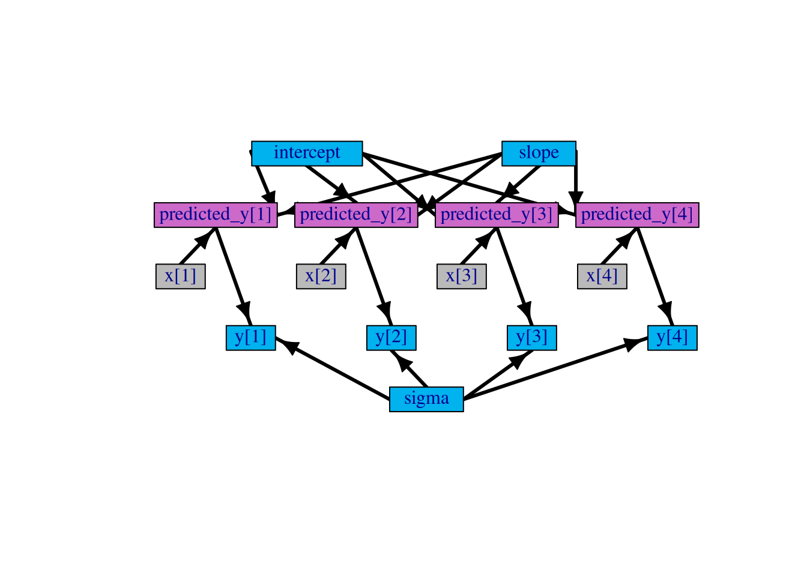

Constants are values needed to define model relationships
Index ranges like N
Constant indexing vectors
Constants must be provided when creating a model with nimbleModel.
Data represents a flag on the role a node plays in the model
E.g., data nodes shouldn’t be sampled in MCMC.
Data values can be changed.
Data can be provided when calling nimbleModel or later.
Providing data and constants together.
Data and constants can be provided together as constants.
It would be slightly easier for BUGS/JAGS users to call this “data”, but that would blur the concepts.
NIMBLE will usually disambiguate data when it is provided as constants.
What are covariates and other non-parameters/non-observations?
Covariates/predictors are examples of values that are not parameters nor data in the sense of the likelihood.
Covariates/predictors can be provided via constants if you don’t need to change them (often the case).
Covariates/predictors can be provided via data or inits if you want to change them.
NIMBLE will not treat them as ‘data nodes’.
Indexing
When values are grouped (particularly in irregular ways), we often have (potentially complicated) indexing.
Here sex and farm_ids are vectors of membership indexes that are known in advance. Make sure to provide them in constants to avoid unnecessary computation (more later).
Particularly in ecological models, indexing can get very complicated.
The farm grouping above is ‘ragged’ (as is the sex grouping). If the number of observations per farm were constant (‘regular’/‘rectangular’), we could have something like this (ignoring sex and length):
Alternative distribution parameterizations (like R) [seen above].
Named parameters (like R) [seen above].
Distinction between constants and data [seen above].
Vectorized math and linear algebra [more below].
Definition-time if-then-else (multiple model variants from the same code) [more below].
User-defined functions and distributions [tomorrow].
And a limitation of NIMBLE
NIMBLE is stricter about requiring dimensions for vectors, matrices, and arrays [more below].
More explicit need to provide dimensions
Square brackets must always be provided to indicate number of dimensions
If x is 2-dimensional, use x[,] %*% beta[], not x %*% beta
(This limitation only pertains to model code, not nimbleFunction programming, which we will cover later.)
Sometimes NIMBLE is not as smart as BUGS/JAGS at determining dimensions. There are two solutions:
Give dimensions explicitly in model code: x[1:n, 1:m], OR
Provide a dimensions argument to nimbleModel.
Example: dimensions = list(x = c(n, m)).
Be careful about scalar vs. vector vs. matrix vs. array
This will not work:
Code
x[1:5] <- (A[1:5, 1:5] %*% b[1:5] + c[1:5])
The problem is that the right-hand-side returns a matrix, so we can’t assign it to a vector.
This will work:
Code
x[1:5] <- (A[1:5, 1:5] %*% b[1:5] + c[1:5])[,1]
Definition-time if-then-else
If you wish to define multiple alternative models in one set of code, you can use if-then-else statements. These will be evaluated based on variables in the R environment when the model is defined. For example:
Running calculate on model
[Note] Any error reports that follow may simply reflect missing values in model variables.
Checking model sizes and dimensions
x values are neither observations (‘data’) nor parameters. x can also be provided in constants (this is generally best, unless you plan to change x) or in data (for consistency with WinBUGS/JAGS).
Draw the graph
This was done with package igraph.

Think of each line of model code as declaring one or mode nodes.
[Note] 'cLength' is provided in 'constants' but not used in the model code and is being ignored.
Building model
Running calculate on model
[Note] Any error reports that follow may simply reflect missing values in model variables.
Checking model sizes and dimensions
[Note] This model is not fully initialized. This is not an error.
To see which variables are not initialized, use model$initializeInfo().
For more information on model initialization, see help(modelInitialization).
Running calculate on model
[Note] Any error reports that follow may simply reflect missing values in model variables.
Checking model sizes and dimensions
[Note] This model is not fully initialized. This is not an error.
To see which variables are not initialized, use model$initializeInfo().
For more information on model initialization, see help(modelInitialization).
Now let’s look at the dependency (graph) structure.
If farm_ids (and sex) are not known to NIMBLE to be constants, then all the observations could potentially depend on any element of farm_effect, sex_int, length_coef.
Consider what would happen in a Metropolis-Hastings sampler for farm_effect[1] in the ‘heavy’ model.
Nodes vs. variables
In NIMBLE:
A variable is an object that may contain multiple nodes.
y is a variable.
A node is a part of a variable declared in one line of model code.
In this case, this is the sum of log probabilities from almost the entire model.
Only the priors for slope and sigma are not included.
Simulating from the model
In this model, there are no random effects. The only stochastic nodes are data or parameters with priors.
Code
model2$sigma
[1] 1
Code
model2$simulate('sigma')model2$sigma
[1] 71.76185
Data values are protected from simulation unless you are sure.
(The following is not good model-generic programming. More in the next few slides.)
Code
model2$y
[1] 0.3295078 -0.8204684 0.4874291 0.7383247
Code
model2$simulate('y') ## Will not over-write data nodes
NULL
Code
model2$y
[1] 0.3295078 -0.8204684 0.4874291 0.7383247
Code
model2$simulate('y', includeData =TRUE) ## will over-write data nodesmodel2$y
[1] 173.08238 55.33688 -56.77838 -81.77799
Understanding lifted nodes
Consider the following version of our linear regression model.
There is no predicted_y[i]. The expression from that is directly in the dnorm for y[i]. Also, we now use the variance instead of the standard deviation in the likelihood.
Code
code3 <-nimbleCode({ intercept ~dnorm(0, sd =1000) slope ~dnorm(0, sd =1000) sigma2 ~dinvgamma(1, 1) # this sort of prior not generally recommendedfor(i in1:4) { y[i] ~dnorm(intercept + slope * x[i], var = sigma2) }})model3 <-nimbleModel(code3, data =list(y =rnorm(4)),inits =list(intercept =0.5, slope =0.2, sigma2 =1,x =c(0.1, 0.2, 0.3, 0.4)))
Defining model
Building model
Setting data and initial values
Running calculate on model
[Note] Any error reports that follow may simply reflect missing values in model variables.
NIMBLE has created nodes in the role of predicted_y[i] and sigma.
These are called lifted nodes. They are created by “lifting” an expression out of a parameter for a distribution and creating a deterministic node for that expression.
Why does NIMBLE do that?
Model-generic programming: concrete example
If we change sigma2 and then directly try to work with y, we’ll cause (silent errors) because the lifted standard deviation has not been updated.
Min. 1st Qu. Median Mean 3rd Qu. Max.
0.008932 1.407256 3.083660 3.694537 5.370941 8.601895
Model-generic programming
Say we want a function that simulates all parts of a model that depend on some input nodes and then returns the corresponding summed log probability. I will call this part of the model “downstream”.
In this case, the model doesn’t have much hierarchical structure.
Always use graph structure in model-generic programming
You may not know where there are lifted nodes.
Always determine what to calculate or simulate from getDependencies or other such tools.
Initial values
A common cause of user problems is bad or incomplete initial values for an MCMC.
NIMBLE will simulate initial values from the prior distribution but this can cause problems in various situations:
with vague priors, one can get very bad initial values
in particular, can get probabilities of 0 or 1, which may not be valid in a given model
with constraints, simulated values may not satisfy a constraint
with truncation, there may be numerical problems if far out in the tail of a distribution
Code
DEmodel <-nimbleModel(DEcode, data = DEdata, constants = DEconstants)
Defining model
[Note] 'cLength' is provided in 'constants' but not used in the model code and is being ignored.
Building model
Setting data and initial values
Running calculate on model
[Note] Any error reports that follow may simply reflect missing values in model variables.
Checking model sizes and dimensions
[Note] This model is not fully initialized. This is not an error.
To see which variables are not initialized, use model$initializeInfo().
For more information on model initialization, see help(modelInitialization).
DEmodel$simulate(DEmodel$getNodeNames()) # by default won't simulate into data nodesDEmodel$sex_int # extreme!
[1] -235.7066 -542.8883
Code
DEmodel$calculate()
[1] NA
Code
DEmodel$calculate('sex_int')
[1] -15.82853
Code
DEmodel$calculate('length_coef')
[1] -15.95817
Code
DEmodel$calculate('farm_effect')
[1] -95.824
Code
DEmodel$calculate('Ecervi_01')
[1] NA
Code
head(DEmodel$disease_probability, n =50)
[1] NA NA NA NA NA NA NA NA NA NA NA NA NA NA NA NA NA NA NA NA NA NA NA NA NA
[26] NA NA NA NA NA NA NA NA NA NA NA NA NA NA NA NA NA NA NA NA NA NA NA NA NA
Model macros
A new feature of nimble, available through the nimbleMacros package is the ability to write commonly-used model components/structures using a shorthand syntax. (NIMBLE programmers can also define their own macros, say for a BNP or spatial model formulation.)
Code
library(nimbleMacros)code2_macros <-nimbleCode({ sigma ~dunif(0, 100) predicted_y[1:4] <-LINPRED(~x) for(i in1:4) { y[i] ~dnorm(predicted_y[i], sd = sigma) }})model2_macros <-nimbleModel(code2_macros, data =list(y =rnorm(4)),inits =list(beta_Intercept =0.5, # See docs for naming (or run once)beta_x =0.2,x =c(0.1, 0.2, 0.3, 0.4)))
Defining model
[Note] Processing model macro `LINPRED`.
[Note] Processing model macro `FORLOOP`.
[Note] Processing model macro `LINPRED_PRIORS`.
Building model
Setting data and initial values
Running calculate on model
[Note] Any error reports that follow may simply reflect missing values in model variables.
Checking model sizes and dimensions
[Note] This model is not fully initialized. This is not an error.
To see which variables are not initialized, use model$initializeInfo().
For more information on model initialization, see help(modelInitialization).
Please run through the code from this module and use the commands discussed to understand the nodes and dependency structure of the deer E. cervi example.
Write code to fix the hyperparameters of the deer E. cervi example and given those fixed values, generate random farm effects and new observations, as would be needed for a simulation study:
Code
model$farm_sd <-1model$sex_int <-c(1.5, 2.5)model$length_coef <-c(0.3, 0.5)# explore the arguments for `getDependencies` and `simulate`deps <- model$getDependencies('???')model$simulate(???)
Source Code
---title: "Working with NIMBLE models"subtitle: "NIMBLE Alaska ASA 2026 Workshop"author: "NIMBLE Development Team"date: "June 2026"format: html: theme: cosmo css: ../styles.css toc: true code-copy: true code-block-background: true code-fold: show code-tools: trueexecute: freeze: auto---<style>slides > slide {overflow-x:auto!important;overflow-y:auto!important;}</style>```{r setup, include=FALSE}library(nimble)source(file.path("..", "examples", "DeerEcervi", "load_DeerEcervi.R"), chdir =TRUE)```# Overview - Features of NIMBLE and NIMBLE's model language - Converting from WinBUGS/JAGS - Models are graphs and why it matters - Models are R objects that can be operated: calculation and simulation# Alternative distribution parameterizations and named parameters- BUGS/JAGS: Only `dnorm(mu, tau)` is supported, where `tau` is precision.- NIMBLE: Alternative parameterizations and named parameters are supported (but defaults are same as with JAGS/WinBUGS): - `dnorm(mean = mu, sd = sigma)` - `dnorm(mean = mu, var = sigma_squared)` - `dnorm(mean = mu, tau = tau)` (tau = precision) DEFAULT IF NOT NAMED - Distributions with alternative parameterizations are listed in [Table 5.2 of User Manual Section 5.2.4](https://r-nimble.org/manual/cha-writing-models.html#tab:parameterizations)- Usage in the deer E. cervi example. ```{r}DEcode_partial <-nimbleCode({for(i in1:2) {# Priors for intercepts and length coefficients for sex = 1 (male), 2 (female) sex_int[i] ~dnorm(0, sd =1000) length_coef[i] ~dnorm(0, sd =1000) }# Priors for farm random effects and their standard deviation. farm_sd ~dunif(0, 20)for(i in1:num_farms) { farm_effect[i] ~dnorm(0, sd = farm_sd) }# <snip> })```Note we placed the prior directly on the standard deviation parameter. In BUGS or JAGS you would need to do this:```{r, eval=FALSE}farm_sd ~dunif(0, 20)farm_prec <-1/farm_sd^2for(i in1:num_farms) { farm_effect[i] ~dnorm(0, farm_prec)}```# What are constants? What are data?### Constants are values needed to define model relationships- Index ranges like `N`- Constant indexing vectors- Constants must be provided when creating a model with `nimbleModel`.### Data represents a flag on the role a node plays in the model- E.g., data nodes shouldn't be sampled in MCMC.- Data values can be changed.- Data can be provided when calling `nimbleModel` or later.### Providing data and constants together.- Data and constants can be provided together **as `constants`**.- It would be slightly easier for BUGS/JAGS users to call this "data", but that would blur the concepts. - NIMBLE will usually disambiguate data when it is provided as constants.### What are covariates and other non-parameters/non-observations?- Covariates/predictors are examples of values that are not parameters nor data in the sense of the likelihood.- Covariates/predictors can be provided via `constants` if you don't need to change them (often the case).- Covariates/predictors can be provided via `data` or `inits` if you want to change them. - NIMBLE will not treat them as 'data nodes'.# IndexingWhen values are grouped (particularly in irregular ways), we often have (potentially complicated) indexing.Here `sex` and `farm_ids` are vectors of membership indexes that are known in advance. Make sure to provide them in `constants` to avoid unnecessary computation (more later). ```{r, eval=FALSE}for(i in1:num_animals) {logit(disease_probability[i]) <- sex_int[ sex[i] ] + length_coef[ sex[i] ] * cLength[i] + farm_effect[ farm_ids[i] ] Ecervi_01[i] ~dbern(disease_probability[i])}```Particularly in ecological models, indexing can get very complicated.The farm grouping above is 'ragged' (as is the sex grouping). If the number of observations per farm were constant ('regular'/'rectangular'), we could have something like this (ignoring sex and length):```{r, eval=FALSE}for(j in1:num_farms) for(i in1:num_animals_per_farm) {logit(disease_probability[j, i]) <- farm_effect[j] Ecervi_01[j, i] ~dbern(disease_probability[j, i]) }```# Converting from JAGS/BUGS to NIMBLESee our [guide online](https://r-nimble.org/blog/quick-guide-for-converting-from-jags-or-bugs-to-nimble.html).How NIMBLE extends BUGS - Alternative distribution parameterizations (like R) [seen above]. - Named parameters (like R) [seen above]. - Distinction between `constants` and `data`[seen above]. - Vectorized math and linear algebra [more below]. - Definition-time if-then-else (multiple model variants from the same code) [more below]. - User-defined functions and distributions [tomorrow].And a limitation of NIMBLE - NIMBLE is stricter about requiring dimensions for vectors, matrices, and arrays [more below].# More explicit need to provide dimensions- Square brackets must always be provided to indicate number of dimensions - If `x` is 2-dimensional, use `x[,] %*% beta[]`, not `x %*% beta` - (This limitation only pertains to model code, not `nimbleFunction` programming, which we will cover later.)- Sometimes NIMBLE is not as smart as BUGS/JAGS at determining dimensions. There are two solutions: - Give dimensions explicitly in model code: `x[1:n, 1:m]`, OR - Provide a `dimensions` argument to `nimbleModel`. - Example: `dimensions = list(x = c(n, m))`.# Be careful about scalar vs. vector vs. matrix vs. arrayThis will not work:```{r eval = FALSE}x[1:5] <- (A[1:5, 1:5] %*% b[1:5] + c[1:5])```The problem is that the right-hand-side returns a matrix, so we can't assign it to a vector.This will work:```{r eval = FALSE}x[1:5] <- (A[1:5, 1:5] %*% b[1:5] + c[1:5])[,1]```# Definition-time if-then-elseIf you wish to define multiple alternative models in one set of code,you can use if-then-else statements. These will be evaluated based onvariables in the R environment when the model is defined. Forexample:```{r eval=FALSE}code <-nimbleCode({ sigma ~dunif(0, 10) beta0 ~dnorm(0, sd =1000) beta1 ~dnorm(0, sd =1000)if(INCLUDE_X2) { beta2 ~dnorm(0, sd =1000) } for(i in1:10) {if(INCLUDE_X2) { y[i] ~dnorm(beta0 + beta1 * x1[i] + beta2 * x2[i], sd = sigma) } else { y[i] ~dnorm(beta0 + beta1 * x1[i], sd = sigma) } }})INCLUDE_X2 <-FALSEm1 <-nimbleModel(code)INCLUDE_X2 <-TRUEm2 <-nimbleModel(code)```m2 has `beta2` while m1 does not.WARNING: there are no other valid uses of `if` statements in a nimble model (i.e., no run-time use)# Models are graphs- Scientists in many application domains and many statisticians speak of "hierarchical models".- Computer scientists and others sometimes speak of "graphical models".- A hierarchical model is typically a directed acyclic graph (DAG).# NIMBLE models as objectsWhen you create a NIMBLE model, it is an object in R.You can: - Get or set parameter or data values. - Determine graph relationships. - Calculate log probabilities. - Simulate (draw) from distributions. - More.# Linear regression exampleLet's use a really simple model:- Linear regression with 4 data points.```{r}set.seed(1)code <-nimbleCode({ intercept ~dnorm(0, sd =1000) slope ~dnorm(0, sd =1000) sigma ~dunif(0, 100)for(i in1:4) { predicted_y[i] <- intercept + slope * x[i] y[i] ~dnorm(predicted_y[i], sd = sigma) }})model <-nimbleModel(code, data =list(y =rnorm(4)),inits =list(intercept =0.5, slope =0.2, sigma =1,x =c(0.1, 0.2, 0.3, 0.4)))````x` values are neither observations ('data') nor parameters. `x` can also be provided in `constants` (this is generally best, unless you plan to change `x`) or in `data` (for consistency with WinBUGS/JAGS).# Draw the graphThis was done with package `igraph`.```{r, linmodel-graph, echo = FALSE}layout <-matrix(ncol =2, byrow =TRUE,# These seem to be rescaled to fit in the plot area,# so I'll just use 0-100 as the scaledata =c(33, 100,66, 100,50, 0, # first three are parameters15, 50, 35, 50, 55, 50, 75, 50, # x's20, 75, 40, 75, 60, 75, 80, 75, # predicted_y's25, 25, 45, 25, 65, 25, 85, 25) # y's )sizes <-c(45, 30, 30,rep(20, 4),rep(50, 4),rep(20, 4))edge.color <-"black"stoch.color <-"deepskyblue2"det.color <-"orchid3"rhs.color <-"gray73"fill.color <-c(rep(stoch.color, 3),rep(rhs.color, 4),rep(det.color, 4),rep(stoch.color, 4))plot(model$graph, vertex.shape ="crectangle",vertex.size = sizes,vertex.size2 =20,layout = layout,vertex.label.cex =1.0,vertex.color = fill.color,edge.width =3,asp =0.5,edge.color = edge.color)```- Think of each line of model code as declaring one or mode *nodes*.# Get and set valuesThis is done in natural R syntax.```{r}model$sigmamodel$xmodel$x[3] <-0.6model$x```This can be done with a compiled model too.# You can even get and set data values```{r}model$ymodel$y[1] <-0.8model$y```Why would this be useful?# Get names of nodes in the graph```{r}model$getNodeNames()```## Get types of nodes```{r}model$getNodeNames(dataOnly =TRUE)``````{r}model$getNodeNames(determOnly =TRUE)``````{r}model$isData('y')model$isData('x')```# Get node relationships```{r}model$getDependencies("x[2]")``````{r}model$getDependencies("sigma")``````{r}model$getDependencies("slope")```# Why do node relationships matter?For typical MCMC samplers, `model$getDependencies('slope')` returns the nodes that need to be calculated when sampling (updating) `slope`.Results from `model$getDependencies` are in *topologically sorted* order:- If you calculate them in order, you'll get correct results.- E.g., `predicted_y[2]` comes before `y[2]`.# Why provide indexes as constants?Recall the likelihood component of the deer E. cervi model:```{r, eval=FALSE}for(i in1:num_animals) {logit(disease_probability[i]) <- sex_int[ sex[i] ] + length_coef[ sex[i] ] * Length[i] + farm_effect[ farm_ids[i] ] Ecervi_01[i] ~dbern(disease_probability[i])```Let's consider passing `farm_ids` either in `constants` or in `data`.```{r}DEconstants <-list(num_farms =24,num_animals =826,cLength = DeerEcervi$cLength,sex = DeerEcervi$Sex,farm_ids = DeerEcervi$farm_ids)DEdata <-list(Ecervi_01 = DeerEcervi$Ecervi_01)m_light <-nimbleModel(DEcode, constants = DEconstants)DEconstants2 <-list(num_farms =24,num_animals =826,cLength = DeerEcervi$cLength)DEdata2 <-list(Ecervi_01 = DeerEcervi$Ecervi_01,sex = DeerEcervi$Sex,farm_ids = DeerEcervi$farm_ids)m_heavy <-nimbleModel(DEcode, data = DEdata2, constants = DEconstants2)```Now let's look at the dependency (graph) structure.```{r}m_light$getDependencies('farm_effect[1]')too_many_deps <- m_heavy$getDependencies('farm_effect[1]')length(too_many_deps)head(too_many_deps, n =30)```If `farm_ids` (and `sex`) are not known to NIMBLE to be constants, then all the observations could potentially depend on any element of `farm_effect`, `sex_int`, `length_coef`.Consider what would happen in a Metropolis-Hastings sampler for `farm_effect[1]` in the 'heavy' model.# Nodes vs. variablesIn NIMBLE:- A variable is an object that may contain multiple nodes. - `y` is a variable.- A node is a part of a variable declared in one line of model code. - `y[1]` ... `y[4]` are scalar nodes.# How vectorizing changes nodes```{r}code2 <-nimbleCode({ intercept ~dnorm(0, sd =1000) slope ~dnorm(0, sd =1000) sigma ~dunif(0, 100) predicted_y[1:4] <- intercept + slope * x[1:4] # vectorized nodefor(i in1:4) {# predicted_y[i] <- intercept + slope * x[i] # scalar nodes (earlier model version) y[i] ~dnorm(predicted_y[i], sd = sigma) }})model2 <-nimbleModel(code2, data =list(y =rnorm(4)),inits =list(intercept =0.5, slope =0.2, sigma =1,x =c(0.1, 0.2, 0.3, 0.4)))```## Look at nodes in the vectorized model```{r}model2$getNodeNames()``````{r}model2$getDependencies('x[2]')```In this case, if `x[2]` had a prior and was being sampled in MCMC, it would be inefficient to calculate all of `y[1]`, `y[2]`, `y[3]`, `y[4]`. # Log probability calculations```{r}model2$calculate('y[1:4]')```This is the sum of log probabilities of all stochastic nodes in the calculation.Deterministic nodes have their values calculated but contribute 0 to the log probability.```{r}model2$getDependencies('intercept')model2$calculate(model2$getDependencies('intercept'))```In this case, this is the sum of log probabilities from almost the entire model.Only the priors for `slope` and `sigma` are not included.# Simulating from the modelIn this model, there are no random effects. The only stochastic nodes are data or parameters with priors.```{r}model2$sigmamodel2$simulate('sigma')model2$sigma```Data values are protected from simulation unless you are sure.(The following is not good model-generic programming. More in the next few slides.)```{r}model2$ymodel2$simulate('y') ## Will not over-write data nodesmodel2$ymodel2$simulate('y', includeData =TRUE) ## will over-write data nodesmodel2$y```# Understanding *lifted nodes*Consider the following version of our linear regression model.There is no `predicted_y[i]`. The expression from that is directly in the `dnorm` for `y[i]`. Also, we now use the variance instead of the standard deviation in the likelihood.```{r}code3 <-nimbleCode({ intercept ~dnorm(0, sd =1000) slope ~dnorm(0, sd =1000) sigma2 ~dinvgamma(1, 1) # this sort of prior not generally recommendedfor(i in1:4) { y[i] ~dnorm(intercept + slope * x[i], var = sigma2) }})model3 <-nimbleModel(code3, data =list(y =rnorm(4)),inits =list(intercept =0.5, slope =0.2, sigma2 =1,x =c(0.1, 0.2, 0.3, 0.4)))```## Look at the nodes```{r}model3$getNodeNames()```NIMBLE has created nodes in the role of `predicted_y[i]` and `sigma`.These are called *lifted nodes*. They are created by "lifting" an expression out of a parameter for a distribution and creating a deterministic node for that expression.Why does NIMBLE do that?# Model-generic programming: concrete exampleIf we change `sigma2` and then directly try to work with `y`, we'll cause (silent errors) because the lifted standard deviation has not been updated.```{r, lifted}model3$sigma2 <-100model3$lifted_sqrt_oPsigma2_cPmodel3$simulate('y', includeData =TRUE)summary(model3$y)depNodes <- model3$getDependencies('sigma2', self =FALSE)depNodesmodel3$simulate(depNodes, includeData =TRUE)model3$lifted_sqrt_oPsigma2_cPsummary(model3$y)```# Model-generic programmingSay we want a function that simulates all parts of a model that depend on some input nodes and then returns the corresponding summed log probability. I will call this part of the model "downstream".```{r, generic-simulate}simulate_downstream <-function(model, nodes) { downstream_nodes <- model$getDependencies(nodes, downstream =TRUE) model$simulate( downstream_nodes, includeData =TRUE ) logProb <- model$calculate( downstream_nodes ) logProb}```Notice that this function will work with *any* model and *any* set of input nodes.```{r}model3$ysimulate_downstream(model3, 'sigma2')model3$y```In this case, the model doesn't have much hierarchical structure.# Always use graph structure in model-generic programmingYou may not know where there are lifted nodes.Always determine what to `calculate` or `simulate` from `getDependencies` or other such tools.# Initial values A common cause of user problems is bad or incomplete initial values for an MCMC.NIMBLE will simulate initial values from the prior distribution but this can cause problems in various situations: - with vague priors, one can get very bad initial values - in particular, can get probabilities of 0 or 1, which may not be valid in a given model - with constraints, simulated values may not satisfy a constraint - with truncation, there may be numerical problems if far out in the tail of a distribution```{r, bad-inits}DEmodel <-nimbleModel(DEcode, data = DEdata, constants = DEconstants)DEmodel$calculate()DEmodel$getVarNames()DEmodel$calculate('Ecervi_01')DEmodel$sex_intDEmodel$simulate(DEmodel$getNodeNames()) # by default won't simulate into data nodesDEmodel$sex_int # extreme!DEmodel$calculate()DEmodel$calculate('sex_int')DEmodel$calculate('length_coef')DEmodel$calculate('farm_effect')DEmodel$calculate('Ecervi_01')head(DEmodel$disease_probability, n =50)```# Model macrosA new feature of nimble, available through the nimbleMacros package is the ability to write commonly-used model components/structures using a shorthand syntax. (NIMBLE programmers can also define their own macros, say for a BNP or spatial model formulation.)```{r}library(nimbleMacros)code2_macros <-nimbleCode({ sigma ~dunif(0, 100) predicted_y[1:4] <-LINPRED(~x) for(i in1:4) { y[i] ~dnorm(predicted_y[i], sd = sigma) }})model2_macros <-nimbleModel(code2_macros, data =list(y =rnorm(4)),inits =list(beta_Intercept =0.5, # See docs for naming (or run once)beta_x =0.2,x =c(0.1, 0.2, 0.3, 0.4)))model2_macros$getCode()model2_macros$getNodeNames()```# Exercises1) Please run through the code from this module and use the commands discussed to understand the nodes and dependency structure of the deer E. cervi example.2) Write code to fix the hyperparameters of the deer E. cervi example and given those fixed values, generate random farm effects and new observations, as would be needed for a simulation study:```{r, eval=FALSE}model$farm_sd <-1model$sex_int <-c(1.5, 2.5)model$length_coef <-c(0.3, 0.5)# explore the arguments for `getDependencies` and `simulate`deps <- model$getDependencies('???')model$simulate(???)```